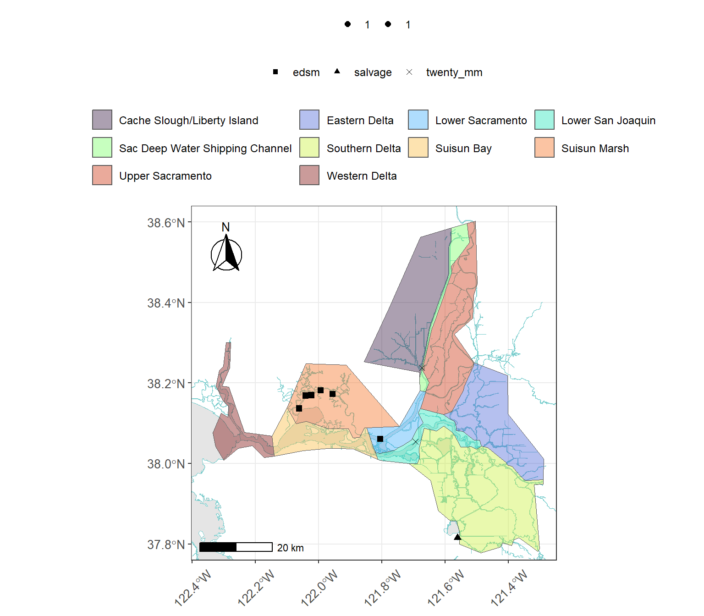
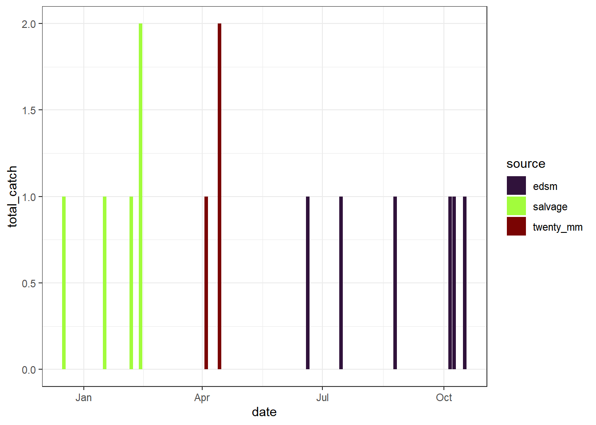
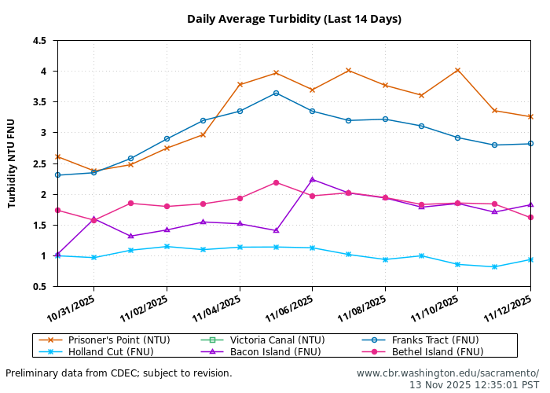
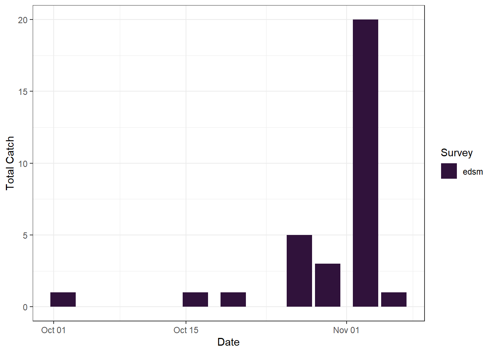

| Survey | Date | Region | Stratum | Life Stage | Catch |
|---|---|---|---|---|---|
| edsm | 2025-11-06 | West | Suisun Marsh | Adult | 9 |
| edsm | 2025-11-06 | West | Suisun Marsh | Juvenile | 10 |
| edsm | 2025-11-10 | West | Suisun Marsh | Adult | 4 |
| edsm | 2025-11-10 | West | Suisun Marsh | Juvenile | 1 |
PRELIMINARY DATA: Assessment for Delta Operations on ESA and CESA-listed Osmerids
Last updated: November 13, 2025
Executive Summary
Section 3.13.3.4.1 of the Proposed Action and Section 8.1.4. of the Incidental Take Permit provide that during Old and Middle River (OMR) Management, the California Department of Water Resources, in coordination with Reclamation, shall provide State Water Project (SWP) and Central Valley Project (CVP) operational outlooks and assessments on a weekly basis to Water Operations Management Team (WOMT).
- OMR Season has not yet begun for Delta Smelt but First Flush could occur starting Dec 1
- Freeport flows and turbidity do not indicate First Flush
- No Delta Smelt salvage has been observed this water year
Operational and Regulatory Conditions
- See current Weekly Fish and Water Operations Outlook document.
- Additional information also available on the SacPAS SMT page.
Environmental Conditions
Weather Forecasts
- Stockton, CA:
- 🌧 This Afternoon: Showers and possibly a thunderstorm. High near 64. South wind around 9 mph, with gusts as high as 20 mph. Chance of precipitation is 100%. New rainfall amounts between a quarter and half of an inch possible.
- 🌧 Tonight: Showers likely and possibly a thunderstorm. Cloudy, with a low around 55. Southwest wind around 5 mph becoming light and variable in the evening. Chance of precipitation is 70%. New precipitation amounts between a quarter and half of an inch possible.
- Antioch, CA:
- 🌧 This Afternoon: Showers and possibly a thunderstorm before 4pm, then rain likely and possibly a thunderstorm after 4pm. Steady temperature around 61. Breezy, with a south wind 18 to 24 mph, with gusts as high as 43 mph. Chance of precipitation is 90%. New rainfall amounts between a tenth and quarter of an inch, except higher amounts possible in thunderstorms.
- 🌧 Tonight: Rain likely, mainly before 10pm. Mostly cloudy, with a low around 55. Southwest wind 10 to 15 mph becoming light and variable. Winds could gust as high as 28 mph. Chance of precipitation is 60%. New precipitation amounts of less than a tenth of an inch possible.
- 💨 This Afternoon: Showers and possibly a thunderstorm before 4pm, then rain likely and possibly a thunderstorm after 4pm. Steady temperature around 61. Breezy, with a south wind 18 to 24 mph, with gusts as high as 43 mph. Chance of precipitation is 90%. New rainfall amounts between a tenth and quarter of an inch, except higher amounts possible in thunderstorms.
- Weather forecasts for Stockton, CA and Antioch, CA as of November 13, 2025.
Delta Smelt
Biological
Delta Smelt Life Stages: Adult, Juvenile
Abundance estimate: 7125 (95% CL: 1518 to 21253) as of the week of November 3–7, 2025
Releases: A total of 60,000 hatchery Delta Smelt have been released for WY 2026. The most recent releases of 60,000 fish occurred in Belden’s Landing (Suisun Marsh) on Nov 04, 2025 to Nov 05, 2025.
Delta Smelt count: 13 adult Delta Smelt and 11 juvenile Delta smelt have been detected this water year. See Table 1 for recent detections, Figure 1 for spatial distribution, and Figure 2 for temporal distribution.
Delta Smelt salvage: 0 Delta Smelt have been salvaged, and the cumulative seasonal salvage is 0.
Notes
- Since there are few recent detections of Delta Smelt, the Smelt Monitoring Team’s capacity to estimate where they are within the Delta is limited.
- See SacPAS SMT Page for additional details on releases and detection in surveys and salvage.
- Historical salvage trends can be found at: SacPAS Salvage Timing

| Survey | Region | Life Stage | Total |
|---|---|---|---|
| edsm | West | Adult | 13 |
| edsm | West | Juvenile | 11 |

Environmental
First Flush
Threshold: 3-day avg FPT flow ≥ 25,000 cfs and 3-day avg FPT turbidity ≥ 50 FNU
- FPT Flow (3-day average): 9709 cfs as of Nov 12, 2025
- FPT Turbidity (3-day average): 4.48 FNU as of Nov 12, 2025

Adult Delta Smelt Entrainment Action
Add JPF later
Threshold: Turbidity ≥ 12 FNU at OBI, HOL and OSJ
- OBI Turbidity: 1.85, 1.71, 1.83 FNU as of Nov 12, 2025
- HOL Turbidity: 0.86, 0.82, 0.94 FNU as of Nov 12, 2025
- OSJ Turbidity: 2.92, 2.8, 2.82 FNU as of Nov 12, 2025
Offramp Adult/Onramp Larval and Juvenile Protections when RVB or SJJ > 12°C
- RVB temperature (3-day average): 16.04°C as of Nov 12, 2025
- SJJ temperature (in the future):

- See Bay-Delta Live for recent Delta-wide turbidity conditions.
- Let’s link to wind plot on the other SacPAS SMT page. Wind plot
Larval/Juvenile Delta Smelt Entrainment Action
Currently Secchi depth; add JPF, South Delta turbidity and PTM later
- Not relevant
Longfin Smelt
Biological
Longfin Smelt Life Stages: Juvenile, Adult
Longfin Smelt count: 4 adult Longfin Smelt and 17 juvenile Longfin smelt have been detected this water year. See Table 3 for recent detections, Figure 3 for spatial distribution, and Figure 4 for temporal distribution.
Longfin Smelt salvage: 0 Longfin Smelt have been salvaged, and the cumulative seasonal salvage is 0.
Include plot of cumulative longfin salvage? Salvage plot code
| Survey | Date | Region | Stratum | Life Stage | Catch |
|---|---|---|---|---|---|
| edsm | 2025-11-03 | West | Suisun Marsh | Adult | 4 |
| edsm | 2025-11-03 | West | Suisun Marsh | Juvenile | 16 |
| edsm | 2025-11-06 | West | Suisun Marsh | Juvenile | 1 |

| Survey | Region | Life Stage | Total |
|---|---|---|---|
| edsm | West | Adult | 4 |
| edsm | West | Juvenile | 17 |

Environmental
Adult Longfin Smelt Entrainment
- Jersey Point Flow:
- Threshold: JPF < 0 cfs
- Reclamation and DWR would compute JPF based on San Joaquin River Inflow at Vernalis, Cosumnes River Inflow, Mokelumne River Inflow, Calaveras River Inflow, Flow from Sacramento River through DCC, Flow from Sacramento River through Georgiana Slough, 65% of in-Delta precipitation, -65% of in-Delta diversions, and -Export Pumping at (Banks + Jones).
- Longfin Smelt salvage of age 1+ Longfin Smelt:
- Threshold for OMR Season Start: 5% FMWT Index + 1
- Threshold for Real-time: 5% Adult population abundance
Larval/Juvenile Longfin Smelt Entrainment
- Jersey Point Flow:
- Threshold: JPF<0 cfs
- Population model demonstrates need to reduce entrainment to avoid population decline
End of Smelt OMR Management
- Not relevant